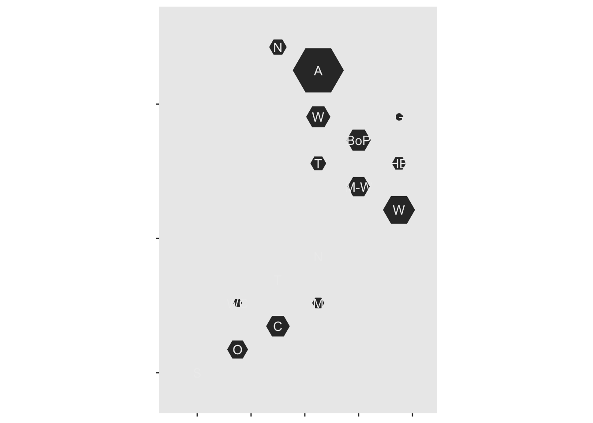

The National Land Transport Plan has just been released. Greater Auckland have discussion here including a chart comparing regions.
I’m going to see how hexmaps created with the DHBins package compare for inter-region comparisons. It’s a little messy because the NLTP doesn’t quite report by regions: it combines some regions
First, the data, in millions of dollars projected expenditure over three years, and thousands of population. I’ve allocated “Top of South Island” to “Marlborough” and “Otago+Southland” to “Otago”
In the DHBins package, geom_region recognises the region names and draws maps – I need to update it to recognise the macron in Manawatū and the ‘h’ in Whanganui, but otherwise we’re ok.
First, a map of total expenditure by region
library(DHBins)## Loading required package: ggplot2ggplot(d)+
geom_region(aes(fill=money,map_id=region_fixname(region)))+
scale_fill_viridis_c(na.value=NA,option="A")+
geom_label_region(short=TRUE,colour="grey93")+
labs(fill="$million")That’s not much use: of course Auckland has the largest expenditure, because it has about as many people as the next three regions put together. Like everything in New Zealand, this needs to be per capita
d$percapita<-with(d,money/people)
ggplot(d)+
geom_region(aes(fill=percapita,map_id=region_fixname(region)))+
scale_fill_viridis_c(na.value=NA,option="A")+
geom_label_region(short=TRUE,colour="grey93")+
labs(fill="$k/person")
Now the outlier is the West Coast, which has very few residents and long roads connecting them, but also quite a bit of tourist traffic.
We can also try scaling the hexes rather than colouring them. There’s some issues with NA vs zero to work around
d$money0<-d$money
d$money0[is.na(d$money)]<-0
d$people[is.na(d$people)]<-1
ggplot(d)+
geom_region(aes(radius=sqrt(money0),map_id=region_fixname(region)))+
scale_fill_viridis_c(na.value=NA)+
geom_label_region(short=TRUE,colour="grey93") That’s total allocation, but it doesn’t show the population.
Here’s the hexes scaled to per capita allocation
ggplot(d)+
geom_region(aes(radius=sqrt(money0/people),map_id=region_fixname(region)))+
scale_fill_viridis_c(na.value=NA)+
geom_label_region(short=TRUE,colour="grey93")We can combine color for the per-capita allocation and size for the population, to illustrate that the high per-capita allocation to the West Coast isn’t actually that much money
d$money0<-d$money
d$money0[is.na(d$money)]<-0
d$people[is.na(d$people)]<-1
ggplot(d)+
geom_region(aes(map_id=region_fixname(region),radius=!is.na(money)),fill="grey",colour="black",coord=FALSE)+
geom_region(aes(radius=sqrt(money0),fill=percapita,map_id=region_fixname(region)))+
scale_fill_viridis_c(na.value=NA,option="A")+
labs(fill="$k/person")One thing that’s very clear from the maps is that there was less money allocated to the South Island, both in total and (apart from the small West Coast budget) per capita. If you want more discussion about what this all implies, try Greater Auckland.